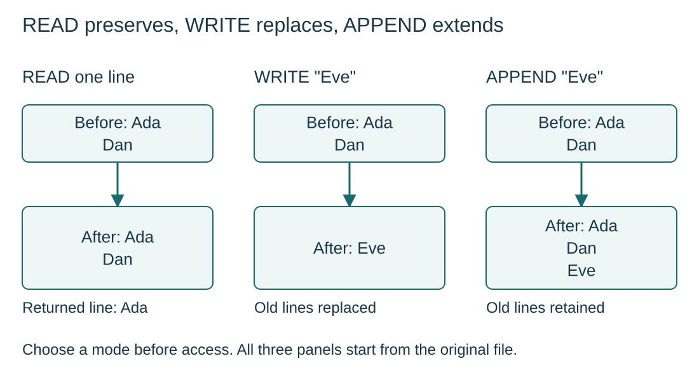

Select the correct file mode
Visual overview
READ preserves, WRITE replaces, APPEND extends

Visual transcript
- Each independent example starts with a file containing the lines Ada and Dan.
- READ Ada leaves both stored lines unchanged. Opening for WRITE replaces old contents; writing Eve leaves only Eve.
- Opening for APPEND and writing Eve leaves Ada, Dan, Eve in that order. Close the file after access.
Keep data beyond one execution
Files retain data on secondary storage so it can be reused after a program terminates or transferred to another program. Keeping names only in variables or arrays does not provide this persistence. A text file stores a sequence of lines that can be processed in order.
Choose whether old lines must survive
OPENFILE selects how a program will use the named file. READ permits reading existing lines. WRITE creates a file or replaces existing contents. APPEND adds at the end while retaining existing contents. Select the mode from the task: replacing a report and extending a log require different modes.
Distinguish filename, contents and working variable
A STRING such as "Names.txt" identifies the file; it is not its contents. READFILE transfers one line from storage into a STRING variable. A second read replaces that variable with the next line unless the program stores or processes the previous value.
Open mode controls what may happen next
| Mode | Next operation | Effect to check |
|---|---|---|
| READ | READFILE after checking EOF | The stored lines are preserved. |
| WRITE | WRITEFILE | Opening replaces any previous contents, even before the first new line is written. |
| APPEND | WRITEFILE | New lines follow the old lines. |
State the conditions of the examples
Open one file in only one mode at a time. Close it before reopening in a different mode. In the following examples, required input files exist and file access succeeds; missing-file and permission handling belong to the chosen programming environment.
Core explanation · Exam essentials
- Files retain data between executions.
- READ loads, WRITE creates or replaces, APPEND extends; a quoted filename is a STRING identifier.